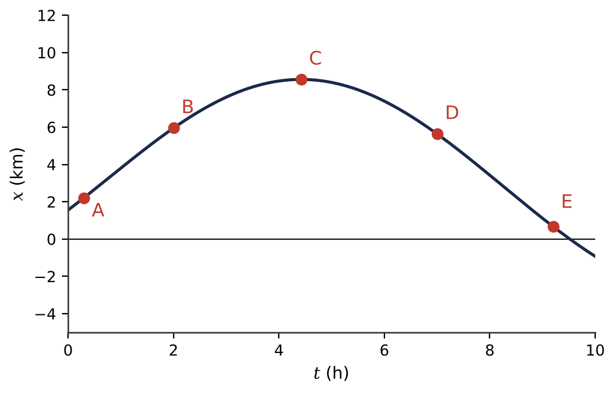
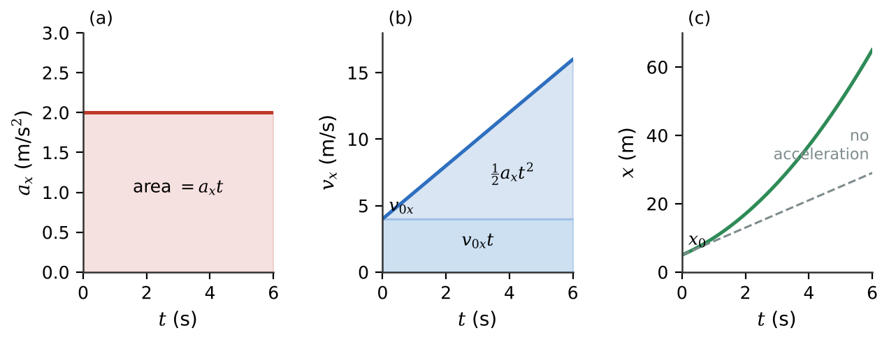
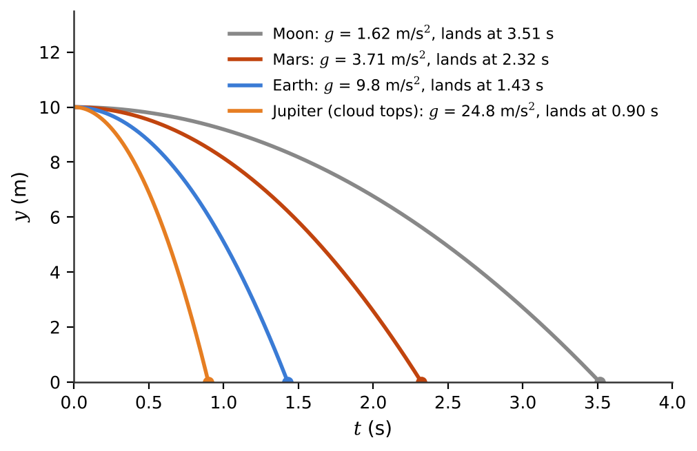

📏What you will learn
By the end of this module, you can:
- Compute displacement, average velocity and average speed, and read them from an x-t graph.
- Find instantaneous velocity and acceleration as derivatives (slopes) and decide whether an object is speeding up or slowing down.
- Choose and apply the constant-acceleration equations, including free fall on different worlds.
- Obtain velocity and position from a time-varying acceleration by integration (areas under graphs).
2.1Displacement, Time, and Average Velocity
To describe straight-line motion we pick an \(x\) axis, an origin and a positive direction, and treat the object (a rover, a lander, a spacecraft) as a particle. Its position is the coordinate \(x\), which may be negative.
The displacement during an interval is \(\Delta x = x_2 - x_1\) (\(\Delta\) always means final minus initial). It can be positive, negative or zero, while the elapsed time \(\Delta t = t_2 - t_1\) is always positive. The average x velocity is
\[v_{\text{av-}x} = \frac{\Delta x}{\Delta t}.\]
Its sign tells you the direction of the net displacement. On an x-t graph (position vertically, time horizontally), the average velocity is the slope of the straight secant line joining the two points.
Average speed is different: total distance travelled divided by elapsed time, never negative. A rover that drives 10 m out and 10 m back in 100 s has an average speed of 0.20 m/s but an average velocity of zero. An Apollo round trip to the Moon had an average speed of about 1.5 km/s, yet zero average velocity.
2.2Instantaneous Velocity
A rocket's guidance computer reports how fast it is moving right now. This instantaneous velocity is the limit of the average velocity as the time interval shrinks to zero:
\[v_x = \lim_{\Delta t\to 0}\frac{\Delta x}{\Delta t} = \frac{dx}{dt}.\]
Geometrically it is the slope of the tangent line to the x-t graph at that instant. A steep upward slope means a large positive velocity, a horizontal tangent means the object is momentarily at rest (turning around), and a downward slope means negative velocity. Being high on the graph does not mean moving fast: position and velocity are different things. “Speed” now means \(|v_x|\).
For polynomials you need one rule: if \(x = Bt^n\) then \(dx/dt = nBt^{n-1}\); the derivative of a constant is zero, and derivatives of sums add. So if a rocket's altitude is \(y = (2.50\ \text{m/s}^2)t^2 + (0.100\ \text{m/s}^3)t^3\), its velocity is \(v_y = (5.00\ \text{m/s}^2)t + (0.300\ \text{m/s}^3)t^2\).
Astronomers measure instantaneous velocities all the time: the Doppler shift of a spacecraft's radio signal, or of a star's spectrum, gives the velocity along the line of sight.

2.3Average and Instantaneous Acceleration
Acceleration is the rate of change of velocity. Over an interval, the average x acceleration is \(a_{\text{av-}x} = \Delta v_x/\Delta t\), measured in m/s². The instantaneous acceleration is the derivative \(a_x = dv_x/dt = d^2x/dt^2\).
On a v-t graph the acceleration is the slope; a straight v-t line means constant acceleration. On an x-t graph, acceleration shows up as curvature: curving up (like a bowl) means \(a_x > 0\), curving down means \(a_x < 0\).
A negative acceleration does not automatically mean slowing down. Compare signs:
- \(v_x\) and \(a_x\) with the same sign: speeding up (a rocket climbing with upward acceleration).
- Opposite signs: slowing down (a lunar lander moving down while its engine accelerates it upward).
Always write velocities with their signs. A lander descending at 18 m/s has \(v_y = -18\) m/s if up is positive. Using only speeds can give the wrong sign for the acceleration. Engineers often quote accelerations in “g's”, multiples of 9.80 m/s²; crewed launches reach about 3 to 4 g.
2.4Motion with Constant Acceleration
When \(a_x\) is constant (a steady engine burn, a short fall near a planet, a braking rollout), four equations solve almost everything. With \(x_0\) and \(v_{0x}\) the values at \(t = 0\):
\[v_x = v_{0x} + a_x t \qquad x - x_0 = \tfrac{1}{2}(v_{0x} + v_x)\,t\]
\[x = x_0 + v_{0x}t + \tfrac{1}{2}a_x t^2 \qquad v_x^2 = v_{0x}^2 + 2a_x(x - x_0)\]
Each equation leaves out one of the five quantities \(t\), \(x - x_0\), \(v_{0x}\), \(v_x\), \(a_x\). List what you know and what you want, then pick the equation that is missing the quantity you neither know nor need. For example, a Space Shuttle touching down at 96 m/s and rolling 2800 m to a stop had \(a_x = -(96)^2/(2\cdot 2800) = -1.6\) m/s², with no need to know the time.
On the v-t graph the line is straight, and the area under it (a rectangle plus a triangle) is the displacement. For two moving objects, such as one rover catching another, write a separate equation for each with the same origin and clock and set their positions equal. Remember: these equations are valid only for constant acceleration.

2.5Freely Falling Objects
On Apollo 15, David Scott dropped a hammer and a feather on the airless Moon and they landed together: without air resistance, all objects at the same place fall with the same acceleration. An object moving under gravity alone is in free fall, whether it is going up, at the top, or coming down.
Near a body's surface the free-fall acceleration has constant magnitude \(g\), which depends on the world: 1.62 m/s² on the Moon, 3.71 m/s² on Mars, 9.80 m/s² on Earth, 24.8 m/s² at Jupiter's cloud tops, 1.35 m/s² on Titan. \(g\) is always a positive number. With up as positive, \(a_y = -g\) and the constant-acceleration equations become
\[v_y = v_{0y} - gt,\quad y = y_0 + v_{0y}t - \tfrac{1}{2}gt^2,\quad v_y^2 = v_{0y}^2 - 2g(y - y_0).\]
At the top of an upward throw \(v_y = 0\), but the acceleration is still \(-g\); otherwise the object would hang there forever. Without air the motion is symmetric: it returns to launch height with its launch speed. A smaller \(g\) means a slower, higher flight: a drop takes about \(\sqrt{9.80/1.62}\approx 2.5\) times longer on the Moon than on Earth.

2.6Velocity and Position by Integration
A real rocket does not have constant acceleration: as it burns propellant it gets lighter and its acceleration grows. For any \(a_x(t)\), split time into thin strips. In each, the velocity changes by \(a_x\,\Delta t\), the area of a strip under the a-t graph. Adding infinitely many thin strips gives an integral:
\[v_x = v_{0x} + \int_0^t a_x\,dt, \qquad x = x_0 + \int_0^t v_x\,dt.\]
So the change in velocity is the area under the a-t graph, and the displacement is the area under the v-t graph (area below the axis counts as negative). Integration undoes differentiation; for polynomials use \(\int_0^t Bt^n\,dt = Bt^{n+1}/(n+1)\). Putting constant \(a_x\) into these formulas gives back \(v_x = v_{0x} + a_xt\) and \(x = x_0 + v_{0x}t + \tfrac12 a_xt^2\), so the constant-acceleration equations are just a special case.
Don't forget the initial conditions \(v_{0x}\) and \(x_0\): without them an integral only gives a change. Spacecraft “inertial navigation” does exactly this numerically, adding up accelerometer readings to track velocity and position during powered ascent.
★Key takeaways
- Displacement Δx = x₂ − x₁ carries a sign; average velocity is Δx/Δt, while average speed is total distance over time and is never negative.
- Instantaneous velocity is dx/dt (slope of the x-t graph); acceleration is dv/dt (slope of the v-t graph).
- An object speeds up when velocity and acceleration have the same sign and slows down when the signs are opposite.
- For constant acceleration, use the four kinematic equations, choosing the one that omits the quantity you neither know nor need.
- Free fall is constant acceleration with a = −g (up positive); g depends on the world, and at the top of the path the acceleration is still −g.
- For changing acceleration, integrate: Δv is the area under the a-t graph and Δx is the area under the v-t graph.
⟡Worked examples
Each example follows the book's method: Identify and set up, Execute, Evaluate.
A robotic lander descends vertically toward the Moon. At one instant it is moving downward at 18.0 m/s; 8.00 s later, with its engine firing, it is moving downward at 2.0 m/s. Find its average acceleration. Is it speeding up or slowing down?
Show solution (try it first)
Identify and set up: We have velocities at two times, so we use \(a_{\text{av-}y} = \Delta v_y/\Delta t\). Take up as positive: \(v_{1y} = -18.0\) m/s, \(v_{2y} = -2.0\) m/s, \(\Delta t = 8.00\) s.
Execute: \[a_{\text{av-}y} = \frac{(-2.0) - (-18.0)}{8.00}\ \text{m/s}^2 = \frac{16.0}{8.00}\ \text{m/s}^2 = +2.00\ \text{m/s}^2.\]
Evaluate: The acceleration is upward (positive) while the velocity is downward (negative). Opposite signs mean the lander is slowing down, exactly what a soft landing needs. Using only speeds, \((2.0 - 18.0)/8.00\), would give the wrong sign.
Rover A drives along a straight lunar valley at a constant 2.50 m/s. As it passes the parked Rover B, B starts in the same direction with constant acceleration 0.400 m/s². (a) How long until B catches A? (b) How far have they gone? (c) How fast is B moving then?
Show solution (try it first)
Identify and set up: Origin at B's parking spot, \(+x\) along the direction of travel, clock starting as A passes. Then \(x_A = (2.50\ \text{m/s})t\) and \(x_B = \tfrac{1}{2}(0.400\ \text{m/s}^2)t^2\). B catches A when \(x_A = x_B\).
Execute: (a) \((2.50)t = (0.200)t^2\) has roots \(t = 0\) (the passing moment) and \(t = 2(2.50)/0.400 = 12.5\) s. (b) \(x_A = (2.50)(12.5) = 31.3\) m (and \(x_B = 0.200(12.5)^2 = 31.3\) m). (c) \(v_{Bx} = 0 + (0.400)(12.5) = 5.00\) m/s.
Evaluate: B ends at exactly twice A's speed. Both covered the same distance in the same time, so both had average velocity 2.50 m/s; for B, starting from rest with constant acceleration, the average is half the final velocity.
An astronaut on Mars (\(g = 3.71\) m/s²) throws a rock straight up at 12.0 m/s, releasing it 1.50 m above the ground. Find (a) the time to reach the top, (b) the maximum height above the ground, and (c) when the rock hits the ground and its velocity then.
Show solution (try it first)
Identify and set up: Free fall from release. Origin on the ground, up positive: \(y_0 = 1.50\) m, \(v_{0y} = +12.0\) m/s, \(a_y = -3.71\) m/s². At the top \(v_y = 0\); at impact \(y = 0\).
Execute: (a) \(0 = v_{0y} - gt\) gives \(t_{\text{top}} = 12.0/3.71 = 3.23\) s. (b) \(y - y_0 = v_{0y}^2/2g = (12.0)^2/(2\times 3.71) = 19.4\) m, so the peak is \(1.50 + 19.4 = 20.9\) m above the ground. (c) \(0 = 1.50 + 12.0t - 1.855t^2\); the quadratic formula gives \(t = 6.59\) s or \(-0.123\) s. Reject the negative root (before the throw). Then \(v_y = 12.0 - 3.71(6.59) = -12.5\) m/s.
Evaluate: The landing speed is a bit more than the launch speed because the rock falls 1.50 m farther than it rose. On Earth the same throw would rise only 7.35 m; Mars' weaker gravity lets it go about 2.6 times higher.
✍️Activity 2: Mission Control Kinematics
You are on duty in mission control, monitoring rovers, landers and rockets. For each problem, sketch an axis and choose a positive direction, then enter a plain number in the requested unit. Numeric answers are accepted within about 2%. Use the \(g\) values from Section 2.5 where needed.
8 graded items, 1 point each, plus a short reflection. For each problem, write your solution in the solution box, then type the final answer as a plain number (keep 3 significant figures; small rounding differences are accepted). You may submit up to 2 times; every attempt is recorded. Right after submitting you will see your score and which items are correct or wrong; after your last attempt you will also see the correct answers.
Use these values unless an item gives its own: \(g_\text{Earth} = 9.80\ \text{m/s}^2\), \(g_\text{Moon} = 1.62\ \text{m/s}^2\), \(g_\text{Mars} = 3.71\ \text{m/s}^2\), \(G = 6.674\times10^{-11}\ \text{N·m}^2/\text{kg}^2\), \(M_\text{Earth} = 5.972\times10^{24}\ \text{kg}\), \(R_\text{Earth} = 6371\ \text{km}\).